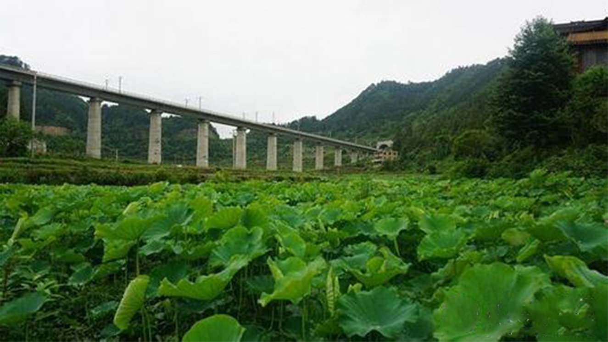
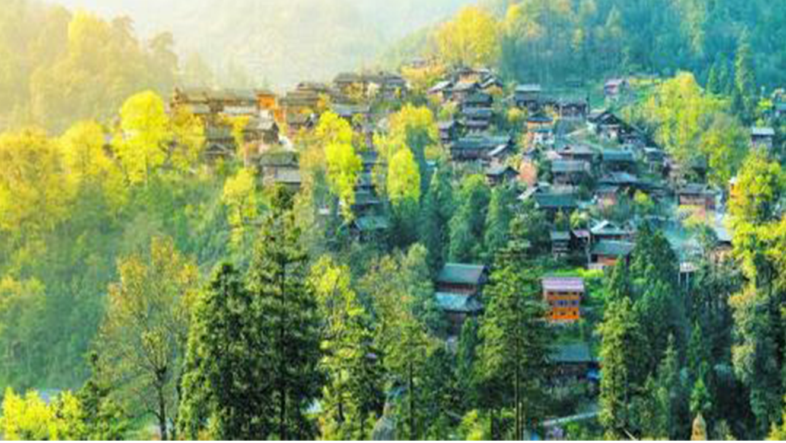

来到了荷塘边欣赏了艳丽的荷花。幽静的村间小路、清新的乡村气息和古朴典雅的民居构成了一副美丽的乡村画卷有的含苞欲放，有的娇艳怒放，在阳光的照耀下分外美丽。一缕微风吹过，阵阵荷花的清香随风而来，让前来观赏荷花的游客感到心旷神怡天...... 展开更多>>
红阳寨地处台江县城的南面，距县城有18公里。全村森林覆盖率达78％，被称为“南国天山”。红寨村容寨貌十分古老，住房依山而建，结构较为独特，均为青色的古典式吊脚楼，村内民族风俗保存得非常完整，苗族风情古朴、醇厚，苗族文化极有特色。村旁古树参天...... 展开更多>>
红阳寨地处台江县城的南面，距县城有18公里。全村森林覆盖率达78％，被称为“南国天山”。红寨村容寨貌十分古老，住房依山而建，结构较为独特，均为青色的古典式吊脚楼，村内民族风俗保存得非常完整，苗族风情古朴、醇厚，苗族文化极有特色。村旁古树参天...... 展开更多>>